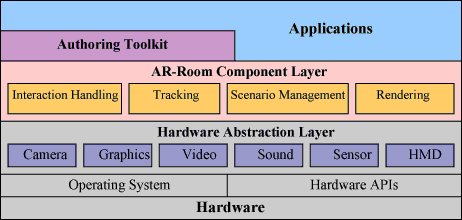
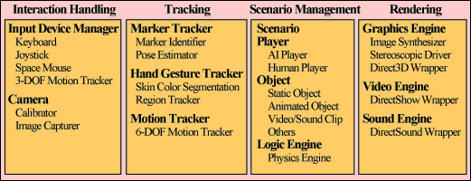

|
A Rapid Prototyping Framework for Augmented Reality Applications
|
AR-Room consists of a lot of deployable components for core augmented reality technologies,
modules for hardware abstraction,
and an authoring toolkit for the rapid content design.
On the AR-Room, application developers are only required to describe their content scenarios
together with a configuration of software components.
Four major procedures in an application are an image analyzer,
an interaction handler, a rendering engine and an image synthesizer.
A content scenario is represented by a set of event-action pairs.
According to the provided scenarios the designated components cooperatively provide
real-time analysis and synthesis of input video frames.

Fig. Overview of the AR-Room architecture.

Fig. Supported AR-Room components.
| |
|
There are many AR applications developed by AR-Room framework.
This page is currently under construction!
Please visit again later.
| |
|